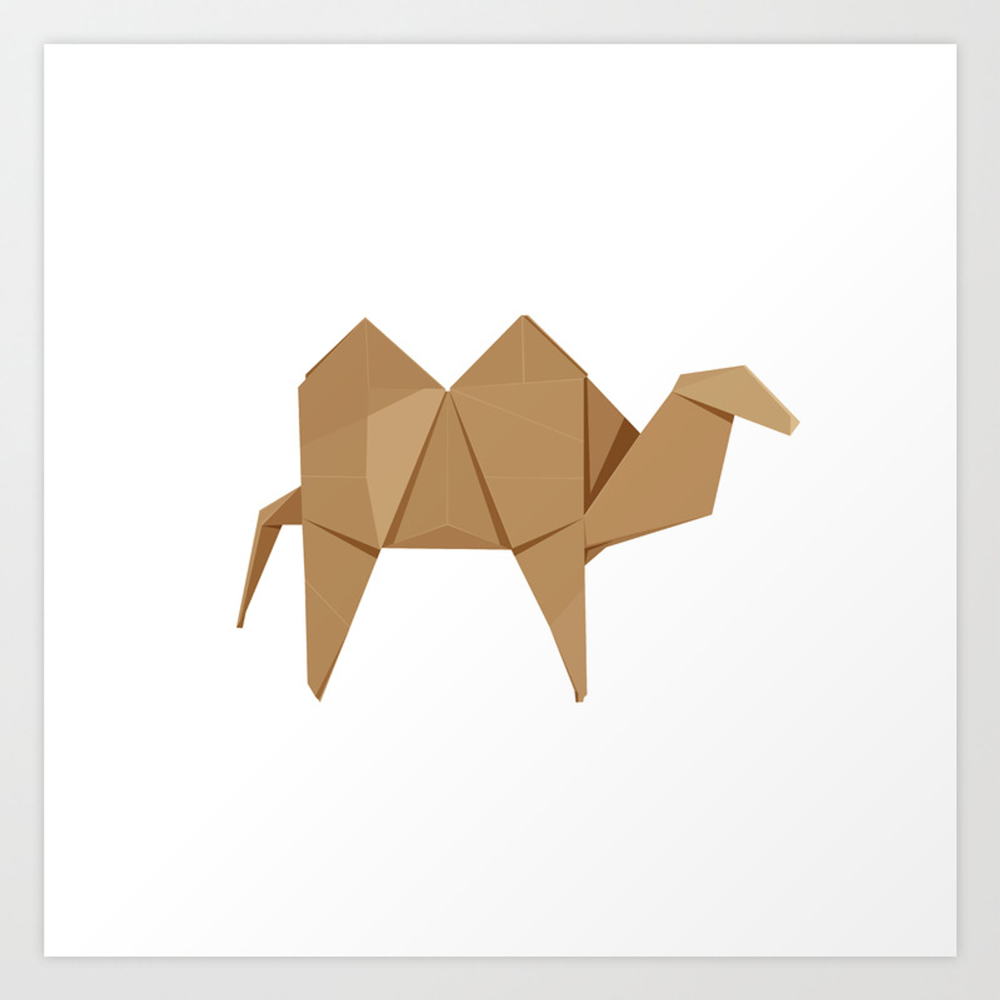
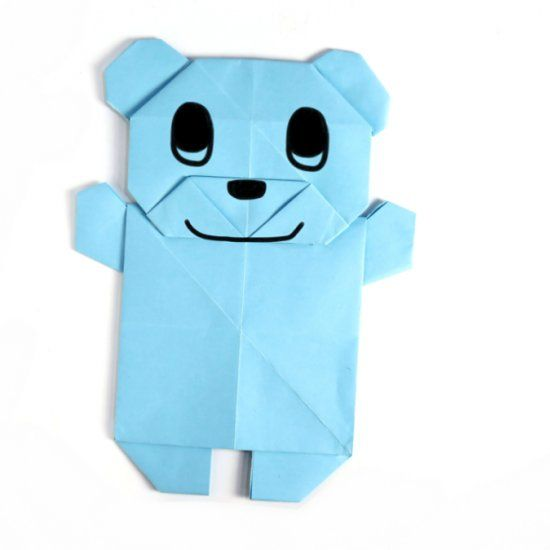
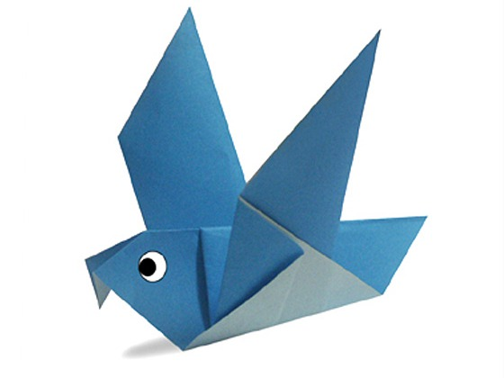

Benifits Of Origami
1 . Develop the ability to think and find solutions
2. Improve diligence and accuracy
3. Develop the ability to follow the instructions
4. Sharpen memory and imagination
5. Sharpen memory and imagination
Camel is known as the ship of the desert
Camels in India are mostly found in the deserts of Rajasthan and Gujarat
Camel is a herbivorous animal which means it eats only plants, fruits and vegetables
THEIR FEET WORK LIKE SALAD TONGS.
CHAMELEONS VARY WILDLY IN TERMS OF SIZE.
ALMOST HALF OF ALL KNOWN SPECIES LIVE IN MADAGASCAR.
Bears are extraordinarily intelligent animals.
Bears grieve deeply for others.
Bears have excellent senses of smell, sight and hearing.
They're private. ...
They co-parent. ...
They mate for life. ...
They have an uncanny ability to find their way home.